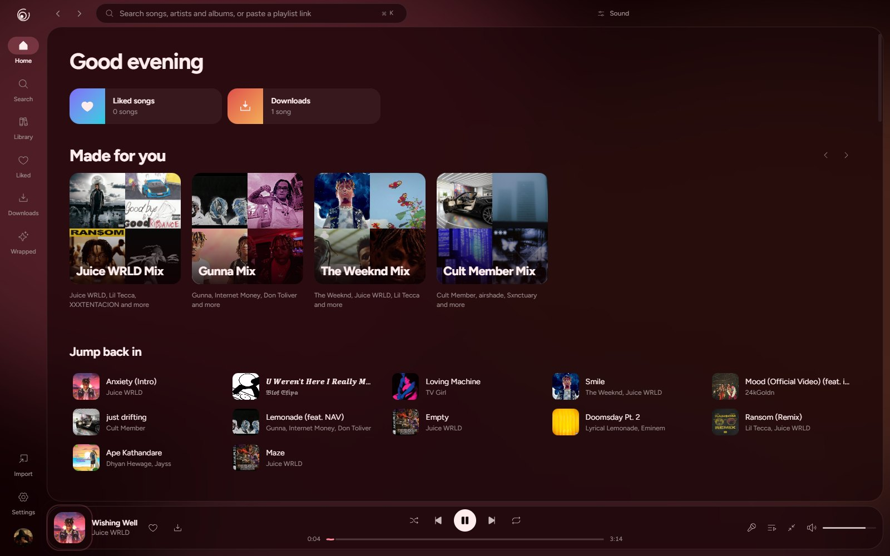
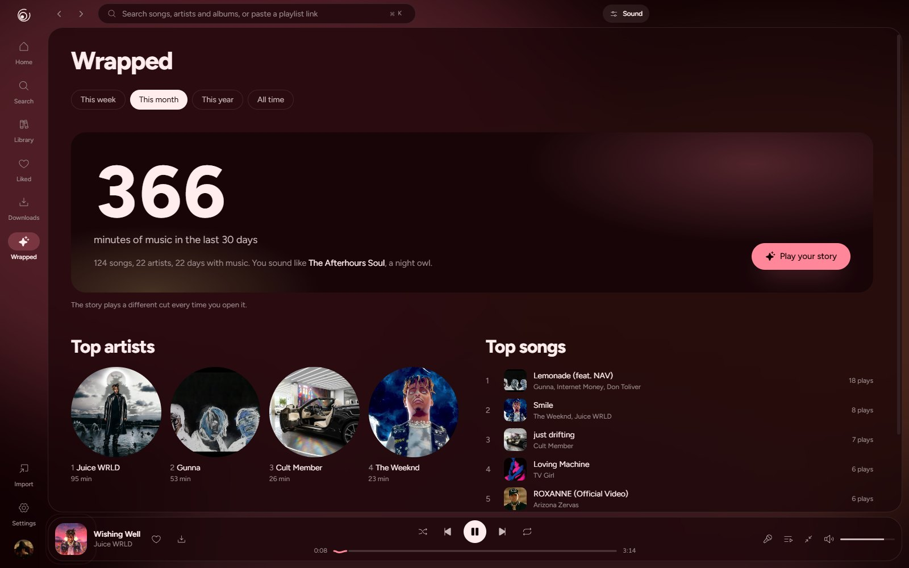
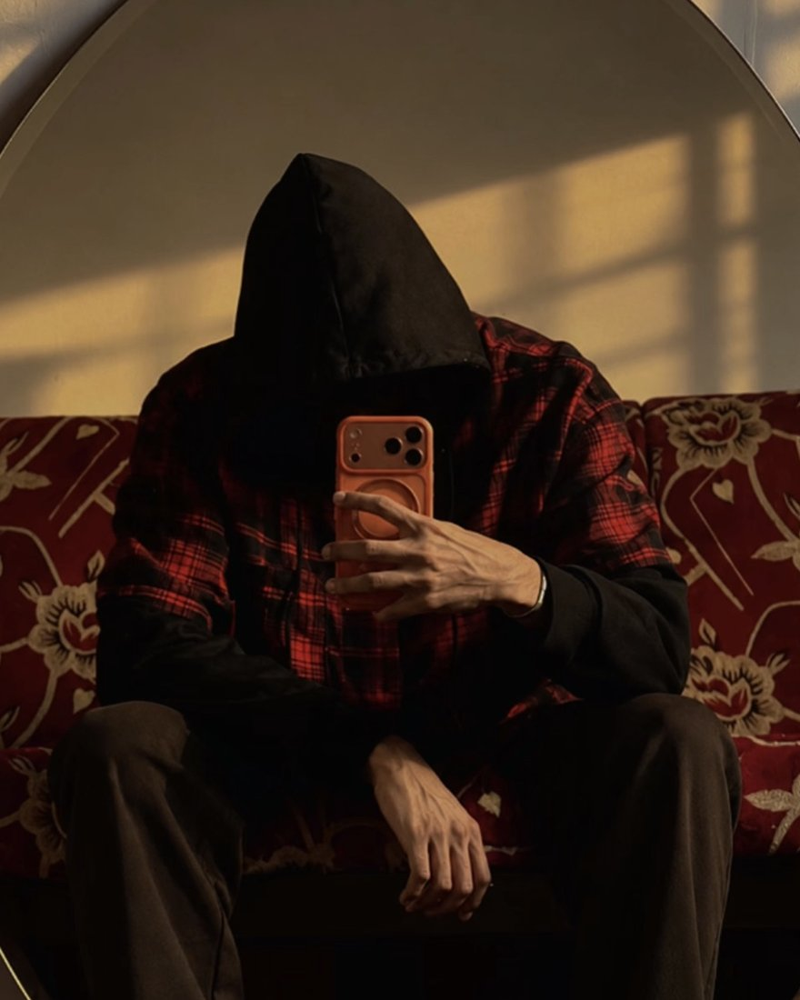

Four places, one search
YouTube Music, any YouTube video, SoundCloud and the music on your computer. No ads, no account.
YouTube MusicYouTubeSoundCloudYour files
The music player that gives every song its own world.

Open a song and sonara picks a look that fits it: the type, the colors, the layout and a living scene behind the lyrics that answers every bass hit. A purple storm with real lightning for Juice WRLD, a fire around the cover for rap, neon on a brick wall for late-night R&B. Or pick one yourself.

Slowed and reverb in one tap. Nightcore. A ten-band equalizer, bass boost, a reverb room, and speed and pitch that don’t step on each other. It all plays live and stays the way you left it.
sonara 2 is a new app around the same idea: music should look the way it sounds.
YouTube Music, any YouTube video, SoundCloud and the music on your computer. No ads, no account.
Title, artist, album and cover art are written into every file. Downloads play offline.
Paste a public Spotify, Apple Music, YouTube or SoundCloud link. The songs land in a playlist.
Synced word by word, with a translation under each line when you want one. The words never shake; the scene behind them does the moving.
Your week, month, year or all time as a story you tap through.

FLAC, MP3, WAV, OGG and M4A with their tags and art. Trim a song and save it with your sound baked in.
The song, the artist, the cover and the time left, on your profile.
A mini player that stays on top, media keys and tray controls, Ctrl K to go anywhere, mixes made from your taste, crossfade, endless autoplay from your taste, and an app that updates itself.

Windows 10 and 11, 64-bit
One installer with everything inside, including the audio tools. It updates itself and works with your media keys.
Not yet
sonara is built and tested on Windows. Other systems may come later.
The first time, Windows may show a blue SmartScreen box. Choose More info, then Run anyway; sonara isn’t signed with a paid certificate yet.
Yes. No subscription, no paid tier, no ads.
No. Install it and press play. It doesn’t ask you to sign in and doesn’t collect what you listen to.
Yes. Add a folder and sonara reads FLAC, MP3, WAV, OGG and M4A with their tags and cover art. It never moves or changes the files, and a .lrc file next to a song becomes its lyrics.
Downloaded songs and your own files play without a connection.
Paste the link to a public playlist into the search box or the Import page. sonara finds each song and lets you check the matches before saving.
Yes, they render properly, and there are styles made for love songs. Turn on translation to read a line in another language under each lyric.
Yes. Installed copies download the new version in the background and ask to restart.